В командной строке прописываем «%01». После ввода данной команды открывается главное меню.
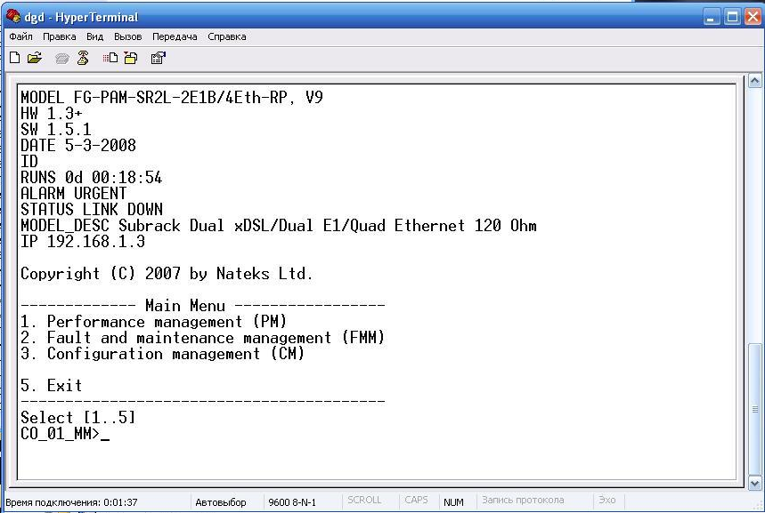Переходим в меню 3. Configuration management (CM). Для этого в командной строке вводи цифру «3» и переходи в данное меню. Далее вводим команду «NET» и «NETDEFAULT», для того чтобы установить сетевые установки. Далее вводим «М» для того чтобы ввернутся в главное меню.
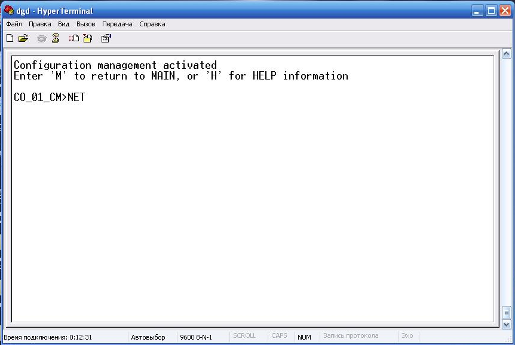 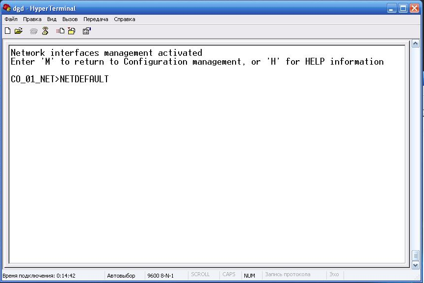 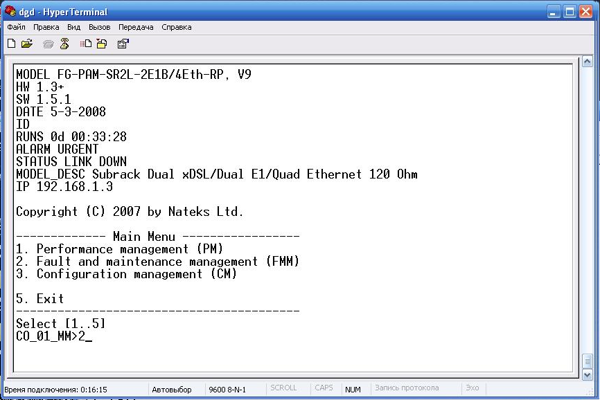Далее переходим в меню 2. Fault and maintenance management для этого в командной строке вводи «2». Для того чтобы перезапустить модем вводим команду «RESET»
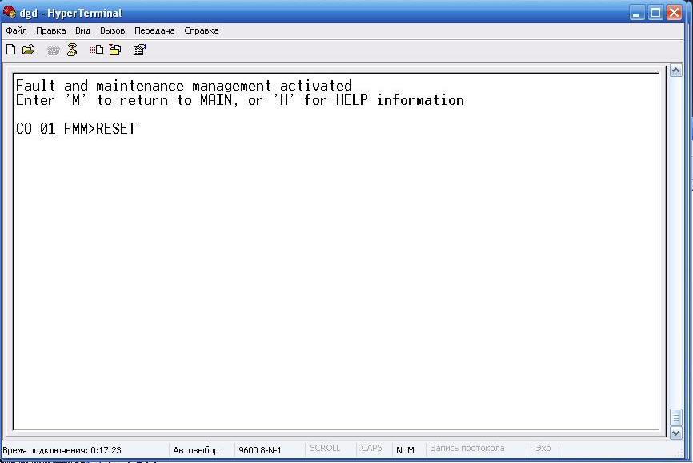Производим сетевые настройки для проверки задержки. Для этого переходим в меню 3. Configuration management (CM) . В данном меню вводим команду «NET» и устанавливаем IP с помощью команды SETIP 192.168.1.3. Далее показываются все сетевые настройки
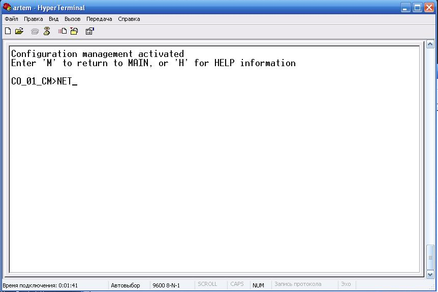 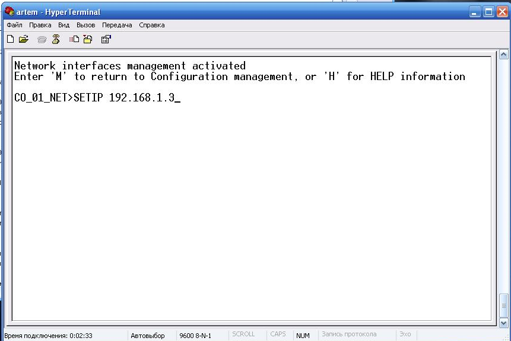 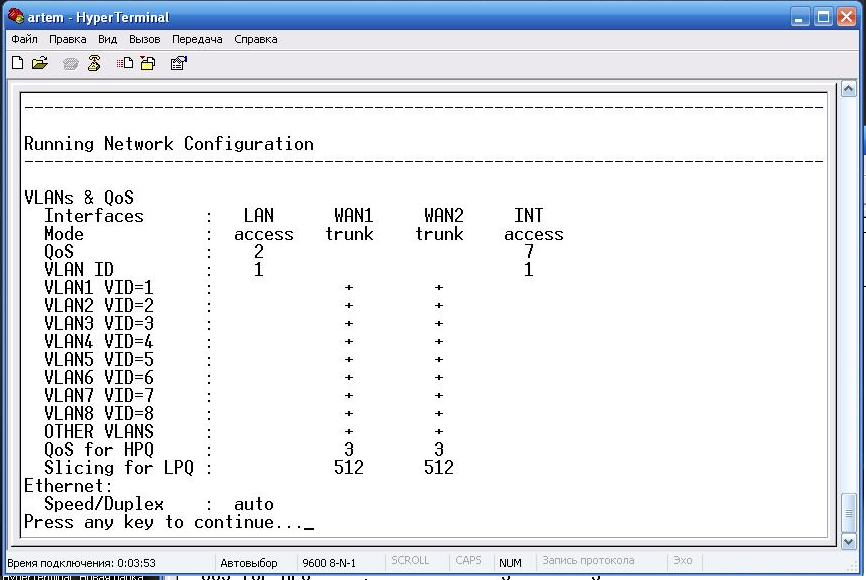Устанавливаем маску под сети «NETMASK» 255.255.255.0 и сохраняем данные настройки с помощью команды «APPLY»
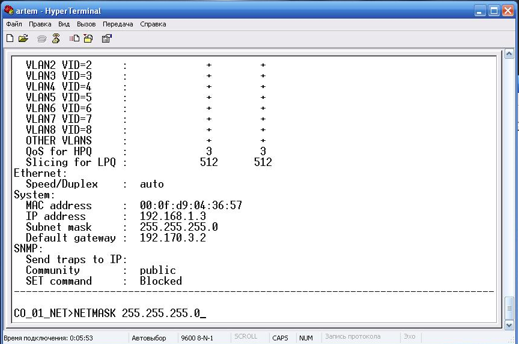 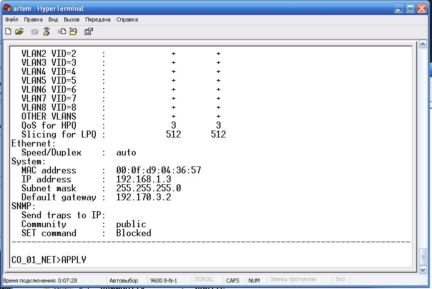 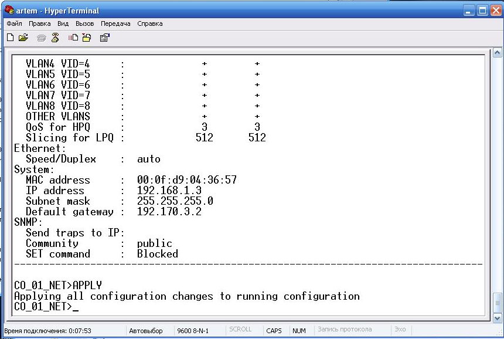Заходим в меню 2. Fault and maintenance management и осуществляем сохранение всех изменений Командой «CONFIRM»
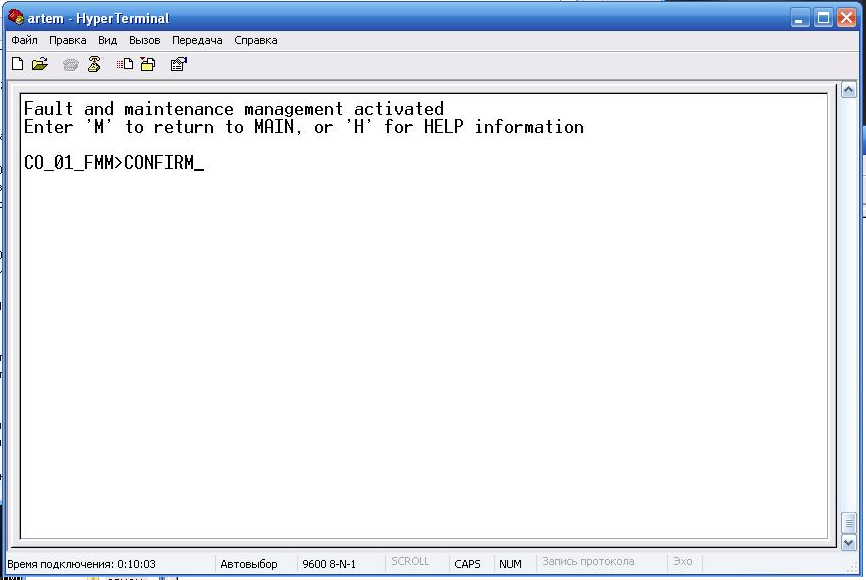 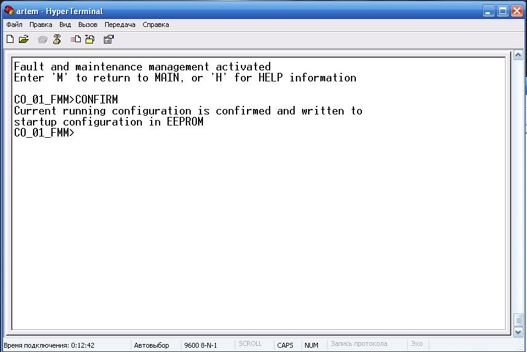Производим проверку на задержку пакетов.
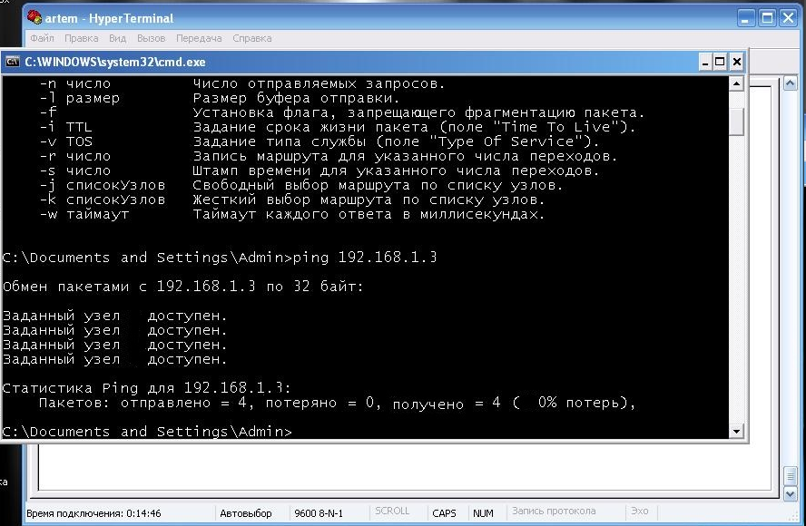